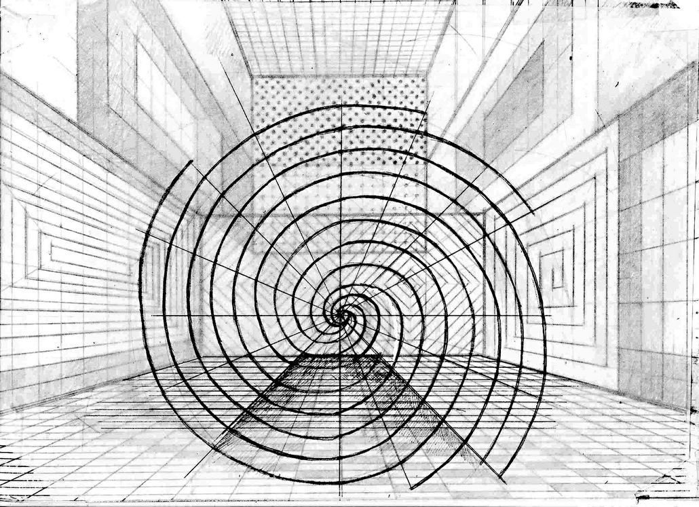

- Авангард стремится породить «неискусство»
- И поставить его на место философии.
- В.С. Турчин
- И поставить его на место философии.
Уж сколько раз твердили миру, что авангард кончился, умер.
В 60-е и 70-е годы художественные критики утверждали, что авангарда больше нет и не будет, так как в искусстве уже всё сделано, и ничего нового создать невозможно.
Однако, замечает В.С. Турчин, после таких заявлений художественный авангард опять возрождался, как феникс из пепла (простите за банальное сравнение).
19 января 2010 года в 19 ч. по местному времени мы убедились, что в искусстве ещё можно создать нечто принципиально новое. Посетители выставки в галерее Ý в Минске увидели это в новом проекте Владимира Цеслера.
Если сравнить традиционное искусство с авангардным (конкретно — с геометрическим абстракционизмом), то можно заметить коренное отличие первого от второго во многих (если не во всех) отношениях. Для сравнения применим категориальный аппарат современного искусствознания.
Первая группа категорий — философские: они сводятся к двум понятиям — явления и сущности. Выпишем признаки классического и абстрактного искусства в два столбца:
- Внешнее — внутреннее
- Изображение — идея,мысль
- Натуральность — условность
- Реализм — мифологизм
- Частное — общее
- Выразительность — суггестивность (внушение)
- Изображение — идея,мысль
В левом столбце названы признаки традиционного искусства, в правом — абстрактного.
Взглянем на (об. 1).
У него нет внешности.
Он ничего не изображает
Он не имеет аналогов в натуре.
Он не отображает какой-либо конкретной вещи или частного случая жизни.
Что может выражать точка или группа ритмично расставленных точек?
Мобилизуем своё воображение и попробуем ответить на этот вопрос.
Пожалуй, такую композицию можно создать в состоянии глубокой задумчивости, когда человек неподвижно сидит, а рука его бессознательно ставит на бумаге точки карандашом.
Такое бывает, когда говоришь по телефону,
или слушаешь что-то неинтересное, вроде доклада с трибуны.
«О повышении темпов развития производства товаров для импортозамещения», или «О недостатках в организации производственного процесса в корпорации Мингоряйцекурицанептица».
На самом деле чувства Художника глубоко скрыты от нас (дерзну предположить, что в процессе создания подобных произведений он не испытывает каких-либо эмоций). Зато для продвинутого зрителя такая картина поражающе суггестивна. Она не только символична, но и мифологична. Отсутствие материальной фигуративности даёт простор внутренней содержательности.
В расположении точек (линий) на картинах закодированы всеобщие законы: ритм, равновесие, движение, контраст, инерция…Они действуют не только в мега- и макромире, но также в человеческом организме, и особенно в процессах зрения. Этим же законам подчиняется жизнь общества — человечества в целом и каждой его ячейки в отдельности.
Как сказал Мис ван дер Роэ: «Чем проще, тем сложнее».
Простота «объектов» Цеслера достигла того предела, за которым возможно только полное исчезновение любых знаков, а вместе с этим отказ от изобразительного искусства (думаю, что это в принципе невозможно).
Рассмотрим феномен Цеслера с точки зрения категорий второй группы — физических. Эта группа подразделяется на геометрические и оптические понятия. Геометрические:
- Масса — пространство
- Объем — плоскость
- Органическая форма — геометрическая форма
- Динамизм — статичность
- Объем — плоскость
Оптические:
- Цвет — свет
- Хроматизм — ахроматизм
- Расчлененность поля зрения — нерасчлененность поля зрения
- Хроматизм — ахроматизм
Все категории, составляющие левый столбец, отсутствуют в объектах выставки; зато помещенные справа явлены в чистом виде.
Пространство двумерной плоскости
Торжествует абсолютную победу над массой и объемом
Тонкое кружево сплетенное из невидимых но воображаемых нитей
Скрепленное черными точками в узлах
Образует завесу между нашим профанным миром
И глубокой тайной мира иного —
Завесу непроницаемую несмотря на свою видимую прозрачность
В нее упираешься лбом и понимаешь в отчаянии —
Это конец. Дальше пути нет.
Но прямых путей в искусстве не бывает. Путь искусства ведет по спирали. Поэтому крайний авангардизм приводит к крайнему (первоначальному) Примитивизму. Верно говорят: новое — это хорошо забытое старое.
К примеру: поп-арт, заменивший плоскостные изображения объемными, возвращает искусство к временам палеолита, когда обитатели пещер лепили рельефные изображения на стенах и амулеты в виде скульптур с окраской.
Все объекты этой выставки отличает крайняя статичность.
Они статичны, как Колосс Родосский, и даже более: Колосс всё-таки упал под воздействием стихий, а композиции Цеслера неуязвимы для толчков и ударов (кстати, эта незыблемость и прочность характерны для всего творчества Мастера).
Третью группу категорий, характеризующих стиль произведения искусства, назовем эстетическими. К ним относятся:
- Прекрасное — безобразное
- Гармония — диссонанс
- Декоративность — конструктивность
- Гармония — диссонанс
Объекты Цеслера существуют как будто в ином измерении, в параллельном мире, где наши земные категории недействительны, «не работают».
Картины этого проекта по-своему прекрасны, — точнее, безразличны к эстетическим качествам. Они прекрасны внеземной, нездешней красотой.
Однако, гармонии здесь не чувствуем: здесь нет человеческой меры, а без этого гармония невозможна. Но и безобразия, или диссонансов также нет, поскольку нет конкретных (миметических) образов.
О декоративности нет и речи, так как эти произведения вряд ли могут украсить обитаемое человеком пространство.
Есть еще одна внесистемная категория, точнее, черта характера, присущая всякому авангарду — смелость. У Цеслера этого хватает с избытком. Отвергая все категории и приёмы классики, модернизма и постмодернизма, он с такой же смелостью оставляет в арьергарде эстетические нормы «всех Луёв» и предшествующих направлений.
В интервью журналисту газеты «Беларусь сегодня» (от 23.01.2010г., с.18) Владимир Цеслер заявил, что цель его творчества — «Спасти мир от красоты». Конечно, это была шутка (художник обладает недюжинным чувством юмора). Однако, в этой фразе точно выражена эстетическая позиция Художника: вместе с предметностью из его произведений исчезли все эстетические категории как правого, так и левого столбцов.
Его «объектам» не присуще ни прекрасное, ни безобразное, ни то, что посредине (если не считать прекрасными геометрические фигуры). В его картинах нельзя усмотреть ни диссонанса, ни гармонии, так как в них отсутствует категория меры, сомасштабной человеку (если не согласиться с тем, что пропорции картин размерены идеально).
Абсолютно отсутствует в объектах качество декоративности, так же, как и конструктивности. Образы этих картин — скорее фактуры, чем конструкции или композиции. Это вещи совсем другого порядка — это изделия, созданные на компьютере.
Что напоследок я скажу?
Возникает сомнение в исторической ценности подобных произведений, и в сáмом их бытии. Они существуют в виде огромного количества электрических зарядов в недрах компьютера. Можно развернуть картину во весь экран или на всю стену, сплющить в точку, нажатием кнопки уничтожить. Такое существование эфемерно и лишено устойчивости.
Слышу голос: а разве мы с вами не состоим из таких же частиц-волн и не подвержены опасности в любой момент исчезнуть?
Отпечатанная на принтере картина — это уже вещь, объект. По-моему, ценность её (его) несомненна. Это факт культуры, искусства, свидетельство времени с его проблемами, и даже, как всякий арт-объект авангарда, пророчество о будущем (да не испугает оно вас).
Наконец, нужно уточнить, как понимает Художник основу основ всякого искусства — отношение искусства к жизни, к Человеку. Здесь мы, пожалуй, обнаружим неожиданно простой мотив творчества Цеслера: он желает внушить человечеству новый взгляд на жизнь (по сравнению с тем, который стал массовым и стандартным в наше время).
Заново открыть и утвердить такие ценности, как простота, немногословие, довольство малым, и даже христианский идеал — «нищета духа». Художник взял на себя роль Савонаролы, проклинающего греховную расточительность и суетность своих современников (Вспомним, как в «советское время» герой пьесы Розова громил дедовской саблей модные серванты и шкафы своих родителей).
Всякий символ может быть истолкован по-разному. Он не только амбивалентен, но и полисемантичен.
Что ж, уважаемые зрители, если вы несогласны с другими истолкованиями символики Цеслера — примите хотя бы это.

Л. Миронова,
03.04.2011